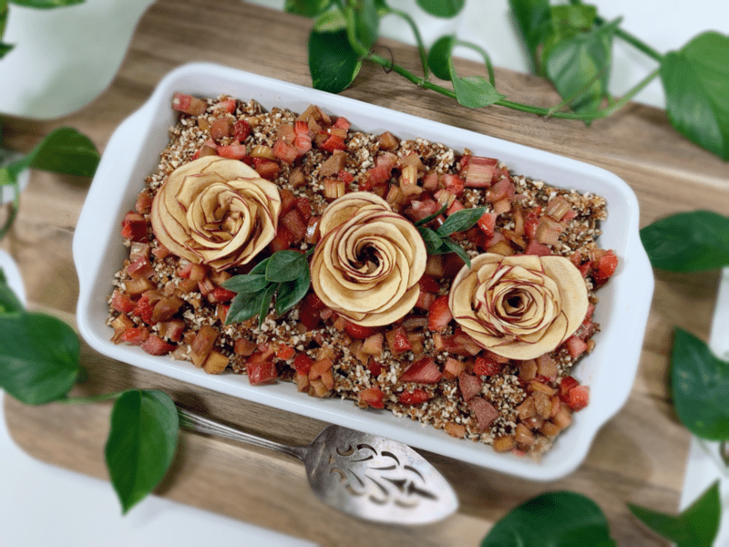
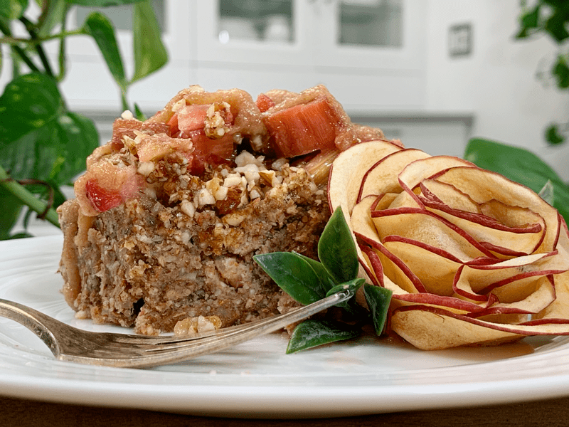
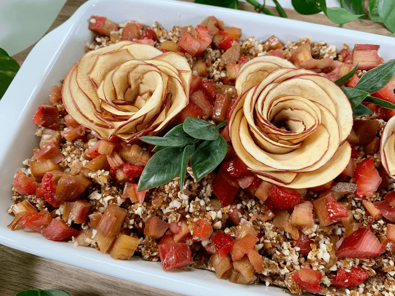
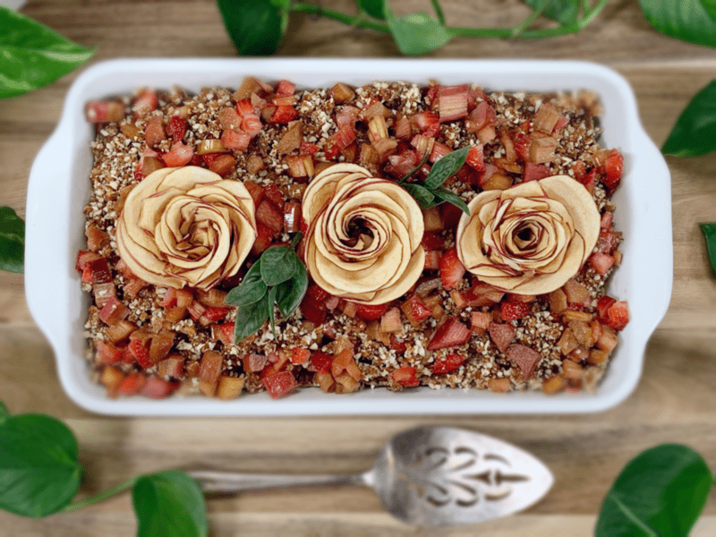

Strawberry Rhubarb Crumble Cake
~ raw, vegan, gluten-free ~
If you are a rhubarb lover, raise your hand… Great! I see that 99% of you are. I had no idea that so many of you loved rhubarb! We have so much in common. :) Rhubarb was always a staple food when I use to visit my Great Grandparent’s home in the summer. Great Grandma was often busy making rhubarb sauce and canning it. It was divine, especially spooned over vanilla ice cream or served in a bowl of cream.

But for me, that little blonde pig-tailed, freckled girl (who was always covered in mud BTW), I took a simpler approach. I would run out to the garden, rip a piece of rhubarb out of the ground, wipe the dirt off on my leg, and run back into the house.
With a giant stalk of rhubarb in one hand, I stood before Great Grandma with my other hand extended, palm facing up. She knew just what to do. She grabbed the sugar dispenser and poured a little puddle of sugar in the palm of my hand. I would giggle, spin on my heels and head running full-speed out the back door to my vast world of adventure. Out “there” I would dip the end of rhubarb into the sugar and munch away. Tart and sweet, what a treat!

Another yummy treat that only came once a year was Grandma’s (not Great Grandma’s this time)… Upside Down Rhubarb Cake! Once the family caught wind that she was making this cake, it didn’t take long until we ALL came out of the woodwork. Even though the growing season of rhubarb was rather long in Alaska and it grew like no other weed, she still only would make just ONE cake a summer, so you can guess that it was quite cherished!
Simple facts about rhubarb… Some people have heard that rhubarb is poisonous, this is true but only the leaves, not the stalks (stems). Rhubarb leaves are also high in oxalates which can increase the risk of kidney stones in people who are susceptible to them. But the stalks are rich in several B-complex vitamins such as folates, riboflavin, niacin, vitamin B-6 (pyridoxine), thiamin, and pantothenic acid.

If you are growing them in the backyard, harvest them by grabbing the base of the leaf stalk, simultaneously pull and twist. Immediately separate the stalk from the leaf. When shopping for rhubarb from the store or Farmer’s Markets look for fresh, firm, crispy bright-red color stalks. Avoid those that are dull, limp, or with bruises/blemishes on the surface. Once at home (harvested or purchased), the stalks should be placed in a plastic bag and stored in the refrigerator. This way, the stems stay fresh for about 2-3 weeks.
I originally created this recipe back in 2013, but I decided to give it a “face-lift.” I added fresh strawberries to the recipe for several reasons; first off, I wanted to brighten the colors of the cake. When the rhubarb is marinated, it loses some of its color. Secondly, I wanted a sweet contrast to the sour rhubarb. I have to say that we enjoyed it even more so. I hope you give this recipe a try, please post a comment below. blessings, amie sue
Ingredients:
8×8 pan
Dry Ingredients:
- 1 cup (90 g) rolled, gluten-free oats
- 1 cup (140 g) raw almonds, ground
- 1/4 cup (43 g) chia seeds, ground
- 3 Tbsp (22 g) raw coconut flour
- 1 tsp (2 g) ground cinnamon
- 1 tsp (6 g) sea salt
- 2 cups (300 g) packed, moist almond pulp
- 2 cups (300 g) marinated rhubarb, divided
- 1 1/2 cups (185 g) strawberries, diced
Wet Ingredients:
- 1 cup (390 g) Medjool dates, soaked in 1/2 cup hot water
- 3 Tbsp (50 g) maple syrup
- 3 Tbsp (60 g) raw honey
- 1 Tbsp (15 g) lemon juice
- 1/2 cup rhubarb liquid, see #6 below
Crumble Topping:
- 1/2 cup (75 g) raw almonds
- 4 (70 g) Medjool dates pitted
Rhubarb drizzle sauce:
- 1/2 cup (100 g) marinated rhubarb
- 1/2 cup (275 g) water or any leftover marinated rhubarb liquid
- 1 tsp (4 g) chia seeds
Preparation:
Cake and crumble rhubarb topping:
- In the food processor fitted with the “S” blade, combine the almonds, oats, ground chia seeds, coconut flour, cinnamon, and salt. Pulse together and pour into a large bowl.
- Add the almond pulp, 1 cup of rhubarb, and 1/2 cup diced strawberries. Set aside.
- In the same food processor bowl combine dates, maple syrup, honey, and lemon juice. Process until creamy. Pour into the large bowl with the “dry” ingredients.
- Work all the ingredients together with your hands. I suggest doing this rather than using the food processor so that the cake batter stays more “fluffy.”
- To make this recipe vegan, replace the honey with another liquid sweetener.
- Line an 8×8 baking pan (or any shaped pan you want) with plastic wrap.
- Press the batter into the pan, firm and even.
- Flip the pan over and allow the cake to drop to the mesh sheet that comes with the dehydrator.
- Spread the remaining 1 cup of rhubarb and diced strawberries over the cake top, or you can wait to add this when ready to serve.
- I have done it both ways and actually like adding it right before serving due to the brighter color and texture.
- Polk holes into the cake top with a chopstick or skewer stick and drizzle the 1/2 cup of marinated rhubarb liquid over the holes and cake top. For the rhubarb liquid, I used the juice created by the marinating process.
- Dehydrate at 145 degrees for 1 hour; this will create a crust on the outside and warm up the dessert.
- While the cake is in the dehydrator make the crumble and drizzle sauce.
Crumble topping:
- Place the almonds and dates in the food processor and process until it is broken down into small bits. Set aside.
Rhubarb drizzle sauce:
- Place the rhubarb, water and chia seeds in the blender and process until creamy. Set aside.
Assembly:
- Remove the cake from the dehydrator and sprinkle the crumble topping on top of the cake.
- Drizzle the rhubarb sauce over the cake in a zig-zag pattern. You can save some or make for if you want additional sauce when serving. It’s so yummy!
- Cover any leftovers with plastic wrap and keep in the fridge for up to 3 days.

© AmieSue.com